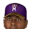
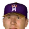

Franchise record book · ABL
Montreal Royeaux
Seasons covered: 1969–2002. Only games played for this franchise count.
Read this first: seasons 1871–2001 are real MLB history that shipped with the OOTP file, mapped by OOTP onto this universe's 30 original franchises (club names as they were that season). 2002 is this universe, season to date (top tiers: MLB, ABL, FBL). Player names are as the export stores them; OOTP gives some historical players generated names.
Home runs
Hits
| # | Player | Season | Team | Hits |
|---|---|---|---|---|
| #1 | 1982 |  Montreal Expos Montreal Expos | 204 | |
| #2 | 1998 | Montreal Expos | 202 | |
| #3 | 1996 | Montreal Expos | 201 | |
| #4 | 2000 | Montreal Expos | 200 | |
| #5 | 2000 | Montreal Expos | 197 | |
| #6 | 1986 | Montreal Expos | 194 | |
| #7 | 1999 | Montreal Expos | 193 | |
| #8 | 1984 | Montreal Expos | 192 | |
| #9 | 1983 | Montreal Expos | 189 | |
| #10 | 1977 | Montreal Expos | 188 |
RBI
| # | Player | Season | Team | RBI |
|---|---|---|---|---|
| #1 | 1999 | Montreal Expos | 131 | |
| #2 | 1987 | Montreal Expos | 123 | |
| #3 | 2000 | Montreal Expos | 123 | |
| #4 | 1983 | Montreal Expos | 113 | |
| #5 | 1982 | Montreal Expos | 109 | |
| #6 | 1998 | Montreal Expos | 109 | |
| #7 | 2001 | Montreal Expos | 108 | |
| #8 | 1984 | Montreal Expos | 106 | |
| #9 | 1996 | Montreal Expos | 103 | |
| #10 | 1973 | Montreal Expos | 103 |
Runs
| # | Player | Season | Team | Runs |
|---|---|---|---|---|
| #1 | 1983 | Montreal Expos | 133 | |
| #2 | 1987 | Montreal Expos | 123 | |
| #3 | 1985 | Montreal Expos | 115 | |
| #4 | 1998 | Montreal Expos | 108 | |
| #5 | 1982 | Montreal Expos | 107 | |
| #6 | 2001 | Montreal Expos | 107 | |
| #7 | 1984 | Montreal Expos | 106 | |
| #8 | 1993 | Montreal Expos | 104 | |
| #9 | 1983 | Montreal Expos | 104 | |
| #10 | 1999 | Montreal Expos | 102 |
Stolen bases
| # | Player | Season | Team | Stolen bases |
|---|---|---|---|---|
| #1 | 1980 | Montreal Expos | 97 | |
| #2 | 1983 | Montreal Expos | 90 | |
| #3 | 1992 | Montreal Expos | 78 | |
| #4 | 1982 | Montreal Expos | 78 | |
| #5 | 1991 | Montreal Expos | 76 | |
| #6 | 1984 | Montreal Expos | 75 | |
| #7 | 1981 | Montreal Expos | 71 | |
| #8 | 1985 | Montreal Expos | 70 | |
| #9 | 1986 | Montreal Expos | 70 | |
| #10 | 1980 | Montreal Expos | 63 |
Doubles
| # | Player | Season | Team | Doubles |
|---|---|---|---|---|
| #1 | 1997 | Montreal Expos | 54 | |
| #2 | 2000 | Montreal Expos | 51 | |
| #3 | 1979 | Montreal Expos | 46 | |
| #4 | 1999 | Montreal Expos | 45 | |
| #5 | 1997 | Montreal Expos | 45 | |
| #6 | 2001 | Montreal Expos | 45 | |
| #7 | 1998 | Montreal Expos | 44 | |
| #8 | 1994 | Montreal Expos | 44 | |
| #9 | 1982 | Montreal Expos | 43 | |
| #10 | 1977 | Montreal Expos | 42 |
Triples
Walks
Total bases
| # | Player | Season | Team | Total bases |
|---|---|---|---|---|
| #1 | 2000 | Montreal Expos | 379 | |
| #2 | 1998 | Montreal Expos | 367 | |
| #3 | 1999 | Montreal Expos | 366 | |
| #4 | 1983 | Montreal Expos | 341 | |
| #5 | 2001 | Montreal Expos | 339 | |
| #6 | 1988 | Montreal Expos | 329 | |
| #7 | 2000 | Montreal Expos | 327 | |
| #8 | 1982 | Montreal Expos | 317 | |
| #9 | 1987 | Montreal Expos | 305 | |
| #10 | 1982 | Montreal Expos | 303 |
Batting average qualified
| # | Player | Season | Team | Batting average |
|---|---|---|---|---|
| #1 | 2002 (ABL) | Montreal Royeaux | .389 | |
| #2 | 2002 (ABL) | Montreal Royeaux | .380 | |
| #3 | 2000 | Montreal Expos | .345 | |
| #4 | 1994 | Montreal Expos | .339 | |
| #5 | 1986 | Montreal Expos | .334 | |
| #6 | 1982 | Montreal Expos | .331 | |
| #7 | 1987 | Montreal Expos | .330 | |
| #8 | 2000 | Montreal Expos | .330 | |
| #9 | 1998 | Montreal Expos | .324 | |
| #10 | 1994 | Montreal Expos | .322 |
On-base % qualified
| # | Player | Season | Team | On-base % |
|---|---|---|---|---|
| #1 | 2002 (ABL) | Montreal Royeaux | .470 | |
| #2 | 2002 (ABL) | Montreal Royeaux | .465 | |
| #3 | 1987 | Montreal Expos | .429 | |
| #4 | 1969 | Montreal Expos | .426 | |
| #5 | 1973 | Montreal Expos | .425 | |
| #6 | Frank Menechino • | 2002 (ABL) | Montreal Royeaux | .423 |
| #7 | 1973 | Montreal Expos | .422 | |
| #8 | 1986 | Montreal Expos | .413 | |
| #9 | 2000 | Montreal Expos | .410 | |
| #10 | 1985 | Montreal Expos | .405 |
Slugging % qualified
| # | Player | Season | Team | Slugging % |
|---|---|---|---|---|
| #1 | 2002 (ABL) | Montreal Royeaux | .683 | |
| #2 | 2000 | Montreal Expos | .664 | |
| #3 | 1999 | Montreal Expos | .600 | |
| #4 | 1994 | Montreal Expos | .592 | |
| #5 | 1998 | Montreal Expos | .589 | |
| #6 | 1994 | Montreal Expos | .587 | |
| #7 | 2001 | Montreal Expos | .566 | |
| #8 | 1996 | Montreal Expos | .562 | |
| #9 | 1981 | Montreal Expos | .553 | |
| #10 | 1979 | Montreal Expos | .551 |
OPS qualified
| # | Player | Season | Team | OPS |
|---|---|---|---|---|
| #1 | 2002 (ABL) | Montreal Royeaux | 1.153 | |
| #2 | 2000 | Montreal Expos | 1.074 | |
| #3 | 2002 (ABL) | Montreal Royeaux | 1.015 | |
| #4 | 1994 | Montreal Expos | .989 | |
| #5 | 1994 | Montreal Expos | .981 | |
| #6 | 1999 | Montreal Expos | .978 | |
| #7 | 1998 | Montreal Expos | .960 | |
| #8 | 1987 | Montreal Expos | .955 | |
| #9 | 1969 | Montreal Expos | .952 | |
| #10 | 2001 | Montreal Expos | .943 |
WAR (OOTP)
| # | Player | Season | Team | WAR (OOTP) |
|---|---|---|---|---|
| #1 | 1969 | Montreal Expos | 7.8 | |
| #2 | 1986 | Montreal Expos | 7.6 | |
| #3 | 1984 | Montreal Expos | 7.6 | |
| #4 | 1985 | Montreal Expos | 7.3 | |
| #5 | 1983 | Montreal Expos | 7.1 | |
| #6 | 1988 | Montreal Expos | 6.7 | |
| #7 | 1982 | Montreal Expos | 6.6 | |
| #8 | 1982 | Montreal Expos | 6.6 | |
| #9 | 1973 | Montreal Expos | 6.4 | |
| #10 | 1987 | Montreal Expos | 6.3 |
Wins
Strikeouts
| # | Player | Season | Team | Strikeouts |
|---|---|---|---|---|
| #1 | 1997 | Montreal Expos | 305 | |
| #2 | 1971 | Montreal Expos | 251 | |
| #3 | 1996 | Montreal Expos | 222 | |
| #4 | 1996 | Montreal Expos | 222 | |
| #5 | 2001 | Montreal Expos | 208 | |
| #6 | 1977 | Montreal Expos | 206 | |
| #7 | 1986 | Montreal Expos | 202 | |
| #8 | 2000 | Montreal Expos | 196 | |
| #9 | 1969 | Montreal Expos | 185 | |
| #10 | 1982 | Montreal Expos | 179 |
Saves
Innings
| # | Player | Season | Team | Innings |
|---|---|---|---|---|
| #1 | 1977 | Montreal Expos | 301.2 | |
| #2 | 1971 | Montreal Expos | 294.2 | |
| #3 | 1970 | Montreal Expos | 284.2 | |
| #4 | 1980 | Montreal Expos | 281.0 | |
| #5 | 1982 | Montreal Expos | 277.0 | |
| #6 | 1971 | Montreal Expos | 275.2 | |
| #7 | 1983 | Montreal Expos | 273.0 | |
| #8 | 1978 | Montreal Expos | 263.0 | |
| #9 | 1974 | Montreal Expos | 253.2 | |
| #10 | 1975 | Montreal Expos | 251.2 |
Complete games
Shutouts
ERA qualified
| # | Player | Season | Team | ERA |
|---|---|---|---|---|
| #1 | 1997 | Montreal Expos | 1.90 | |
| #2 | 1991 | Montreal Expos | 2.39 | |
| #3 | 1989 | Montreal Expos | 2.39 | |
| #4 | 1982 | Montreal Expos | 2.40 | |
| #5 | 1988 | Montreal Expos | 2.44 | |
| #6 | 1992 | Montreal Expos | 2.47 | |
| #7 | 1978 | Montreal Expos | 2.47 | |
| #8 | 2002 (ABL) | Montreal Royeaux | 2.47 | |
| #9 | 1973 | Montreal Expos | 2.66 | |
| #10 | 1992 | Montreal Expos | 2.68 |
WHIP qualified
| # | Player | Season | Team | WHIP |
|---|---|---|---|---|
| #1 | 1997 | Montreal Expos | 0.93 | |
| #2 | 1988 | Montreal Expos | 0.94 | |
| #3 | 1992 | Montreal Expos | 1.03 | |
| #4 | Bryn Smith | 1985 | Montreal Expos | 1.05 |
| #5 | 1990 | Montreal Expos | 1.06 | |
| #6 | Bryn Smith | 1988 | Montreal Expos | 1.07 |
| #7 | Bryn Smith | 1989 | Montreal Expos | 1.07 |
| #8 | 2001 | Montreal Expos | 1.08 | |
| #9 | 1994 | Montreal Expos | 1.11 | |
| #10 | 1981 | Montreal Expos | 1.11 |
K/9 qualified
| # | Player | Season | Team | K/9 |
|---|---|---|---|---|
| #1 | 1997 | Montreal Expos | 11.4 | |
| #2 | 1996 | Montreal Expos | 9.2 | |
| #3 | 1989 | Montreal Expos | 8.9 | |
| #4 | 1994 | Montreal Expos | 8.8 | |
| #5 | 1996 | Montreal Expos | 8.6 | |
| #6 | 2002 (ABL) | Montreal Royeaux | 8.5 | |
| #7 | 2001 | Montreal Expos | 8.4 | |
| #8 | 1986 | Montreal Expos | 8.3 | |
| #9 | 2000 | Montreal Expos | 8.1 | |
| #10 | Tony Armas • | 2001 | Montreal Expos | 8.1 |
WAR (OOTP)
| # | Player | Season | Team | WAR (OOTP) |
|---|---|---|---|---|
| #1 | 1997 | Montreal Expos | 9.4 | |
| #2 | 1977 | Montreal Expos | 8.2 | |
| #3 | 1982 | Montreal Expos | 7.2 | |
| #4 | 1996 | Montreal Expos | 6.5 | |
| #5 | 2001 | Montreal Expos | 6.2 | |
| #6 | 1983 | Montreal Expos | 5.7 | |
| #7 | Bryn Smith | 1985 | Montreal Expos | 5.7 |
| #8 | 2000 | Montreal Expos | 5.7 | |
| #9 | 1996 | Montreal Expos | 5.6 | |
| #10 | 1990 | Montreal Expos | 5.5 |
Home runs
| # | Player | Years | Home runs |
|---|---|---|---|
| #1 | 1976–96 | 225 | |
| #2 | 1974–92 | 220 | |
| #3 | 1980–96 | 204 | |
| #4 | 1996–02 | 170 | |
| #5 | 1962–78 | 118 | |
| #6 | 1985–02 | 106 | |
| #7 | 1993–02 | 101 | |
| #8 | 1974–88 | 100 | |
| #9 | 1989–02 | 99 | |
| #10 | 1979–02 | 96 |
Hits
| # | Player | Years | Hits |
|---|---|---|---|
| #1 | 1980–96 | 1694 | |
| #2 | 1979–02 | 1622 | |
| #3 | 1976–96 | 1575 | |
| #4 | 1974–92 | 1427 | |
| #5 | 1974–91 | 1063 | |
| #6 | 1974–88 | 896 | |
| #7 | 1996–02 | 879 | |
| #8 | 1985–02 | 830 | |
| #9 | 1993–02 | 808 | |
| #10 | 1962–78 | 791 |
RBI
| # | Player | Years | RBI |
|---|---|---|---|
| #1 | 1980–96 | 905 | |
| #2 | 1976–96 | 838 | |
| #3 | 1974–92 | 823 | |
| #4 | 1979–02 | 556 | |
| #5 | 1996–02 | 512 | |
| #6 | 1962–78 | 466 | |
| #7 | 1974–88 | 444 | |
| #8 | 1985–02 | 433 | |
| #9 |  Hubie Brooks | 1980–94 | 390 |
| #10 | 1993–02 | 384 |
Runs
| # | Player | Years | Runs |
|---|---|---|---|
| #1 | 1979–02 | 947 | |
| #2 | 1976–96 | 828 | |
| #3 | 1980–96 | 737 | |
| #4 | 1974–92 | 707 | |
| #5 | 1996–02 | 464 | |
| #6 | 1974–91 | 446 | |
| #7 | 1989–02 | 430 | |
| #8 | 1974–88 | 421 | |
| #9 | 1993–02 | 420 | |
| #10 | 1962–78 | 412 |
Stolen bases
| # | Player | Years | Stolen bases |
|---|---|---|---|
| #1 | 1979–02 | 635 | |
| #2 | 1989–02 | 266 | |
| #3 | 1976–96 | 253 | |
| #4 | Delino DeShields • | 1990–02 | 187 |
| #5 | 1975–82 | 139 | |
| #6 | 1983–99 | 133 | |
| #7 | 1989–02 | 98 | |
| #8 | 1974–82 | 97 | |
| #9 | 1983–95 | 96 | |
| #10 | 1993–02 | 96 |
Doubles
| # | Player | Years | Doubles |
|---|---|---|---|
| #1 | 1980–96 | 360 | |
| #2 | 1976–96 | 295 | |
| #3 | 1979–02 | 281 | |
| #4 | 1974–92 | 274 | |
| #5 | 1974–91 | 222 | |
| #6 | 1974–88 | 208 | |
| #7 | 1996–02 | 169 | |
| #8 | 1985–02 | 168 | |
| #9 | 1993–02 | 165 | |
| #10 | 1993–02 | 165 |
Triples
| # | Player | Years | Triples |
|---|---|---|---|
| #1 | 1979–02 | 82 | |
| #2 | 1976–96 | 67 | |
| #3 | 1980–96 | 31 | |
| #4 | 1974–91 | 30 | |
| #5 | 1996–02 | 29 | |
| #6 | Delino DeShields • | 1990–02 | 25 |
| #7 | 1983–95 | 25 | |
| #8 | 1974–88 | 24 | |
| #9 | 1974–92 | 24 | |
| #10 | 1962–78 | 23 |
Walks
| # | Player | Years | Walks |
|---|---|---|---|
| #1 | 1979–02 | 793 | |
| #2 | 1974–92 | 582 | |
| #3 | 1980–96 | 514 | |
| #4 | 1962–78 | 502 | |
| #5 | 1958–78 | 370 | |
| #6 | 1976–96 | 354 | |
| #7 | 1971–89 | 337 | |
| #8 | 1968–85 | 321 | |
| #9 | 1974–91 | 310 | |
| #10 | 1963–85 | 310 |
Total bases
| # | Player | Years | Total bases |
|---|---|---|---|
| #1 | 1980–96 | 2728 | |
| #2 | 1976–96 | 2679 | |
| #3 | 1974–92 | 2409 | |
| #4 | 1979–02 | 2355 | |
| #5 | 1996–02 | 1616 | |
| #6 | 1974–91 | 1525 | |
| #7 | 1974–88 | 1452 | |
| #8 | 1985–02 | 1344 | |
| #9 | 1993–02 | 1322 | |
| #10 | 1962–78 | 1307 |
Batting average min 2,000 PA
| # | Player | Years | Batting average |
|---|---|---|---|
| #1 | 1996–02 | .319 | |
| #2 | 1997–02 | .302 | |
| #3 | 1979–02 | .301 | |
| #4 | 1963–85 | .295 | |
| #5 | 1993–02 | .293 | |
| #6 | 1990–02 | .292 | |
| #7 | 1975–85 | .288 | |
| #8 | 1989–02 | .281 | |
| #9 | 1995–02 | .281 | |
| #10 | 1974–91 | .280 |
On-base % min 2,000 PA
| # | Player | Years | On-base % |
|---|---|---|---|
| #1 | 1963–85 | .402 | |
| #2 | 1979–02 | .391 | |
| #3 | 1963–74 | .390 | |
| #4 | 1958–78 | .381 | |
| #5 | 1996–02 | .378 | |
| #6 | 1962–78 | .368 | |
| #7 | Delino DeShields • | 1990–02 | .367 |
| #8 | 1968–85 | .365 | |
| #9 | 1989–02 | .357 | |
| #10 | 1997–02 | .355 |
Slugging % min 2,000 PA
| # | Player | Years | Slugging % |
|---|---|---|---|
| #1 | 1996–02 | .587 | |
| #2 | 1963–85 | .497 | |
| #3 | 1990–02 | .489 | |
| #4 | 1989–02 | .483 | |
| #5 | 1993–02 | .480 | |
| #6 | 1976–96 | .476 | |
| #7 | 1975–85 | .476 | |
| #8 | 1997–02 | .468 | |
| #9 | 1974–92 | .454 | |
| #10 | Hubie Brooks | 1980–94 | .441 |
OPS min 2,000 PA
| # | Player | Years | OPS |
|---|---|---|---|
| #1 | 1996–02 | .965 | |
| #2 | 1963–85 | .899 | |
| #3 | 1989–02 | .839 | |
| #4 | 1990–02 | .838 | |
| #5 | 1979–02 | .829 | |
| #6 | 1993–02 | .827 | |
| #7 | 1997–02 | .823 | |
| #8 | 1958–78 | .821 | |
| #9 | 1975–85 | .805 | |
| #10 | 1962–78 | .805 |
WAR (OOTP)
| # | Player | Years | WAR (OOTP) |
|---|---|---|---|
| #1 | 1979–02 | 57.4 | |
| #2 | 1974–92 | 42.5 | |
| #3 | 1976–96 | 40.1 | |
| #4 | 1980–96 | 27.1 | |
| #5 | 1996–02 | 24.4 | |
| #6 | 1962–78 | 23.0 | |
| #7 | 1989–02 | 19.6 | |
| #8 | 1963–85 | 19.5 | |
| #9 | 1958–78 | 18.9 | |
| #10 | 1989–02 | 17.7 |
Wins
| # | Player | Years | Wins |
|---|---|---|---|
| #1 | 1973–85 | 158 | |
| #2 | 1976–98 | 100 | |
| #3 | Bryn Smith | 1981–93 | 81 |
| #4 | 1979–94 | 72 | |
| #5 | 1969–83 | 68 | |
| #6 | 1991–02 | 58 | |
| #7 | 1978–96 | 56 | |
| #8 | 1992–02 | 55 | |
| #9 | 1980–88 | 55 | |
| #10 | 1966–83 | 51 |
Strikeouts
| # | Player | Years | Strikeouts |
|---|---|---|---|
| #1 | 1973–85 | 1621 | |
| #2 | 1976–98 | 973 | |
| #3 | 1992–02 | 843 | |
| #4 | Bryn Smith | 1981–93 | 838 |
| #5 | 1967–74 | 831 | |
| #6 | 1969–83 | 810 | |
| #7 | 1991–02 | 750 | |
| #8 | 1979–94 | 678 | |
| #9 | 1998–02 | 656 | |
| #10 | 1978–96 | 603 |
Saves
| # | Player | Years | Saves |
|---|---|---|---|
| #1 | 1979–94 | 152 | |
| #2 | 1995–02 | 125 | |
| #3 | 1990–99 | 109 | |
| #4 | 1989–00 | 105 | |
| #5 | 1985–92 | 101 | |
| #6 | 1967–81 | 75 | |
| #7 | 1966–83 | 52 | |
| #8 |  Goldfield Murray | 1974–85 | 33 |
| #9 | 1972–83 | 30 | |
| #10 | 1959–71 | 24 |
Innings
| # | Player | Years | Innings |
|---|---|---|---|
| #1 | 1973–85 | 2837.2 | |
| #2 | 1976–98 | 1609.0 | |
| #3 | Bryn Smith | 1981–93 | 1400.1 |
| #4 | 1969–83 | 1359.1 | |
| #5 | 1979–94 | 1186.1 | |
| #6 | 1967–74 | 1085.1 | |
| #7 | 1978–96 | 883.0 | |
| #8 | 1991–02 | 850.0 | |
| #9 | 1992–02 | 797.1 | |
| #10 | 1980–88 | 793.1 |
Complete games
| # | Player | Years | Complete games |
|---|---|---|---|
| #1 | 1973–85 | 129 | |
| #2 | 1967–74 | 46 | |
| #3 | 1976–98 | 41 | |
| #4 | 1969–83 | 40 | |
| #5 | 1979–94 | 31 | |
| #6 | 1978–96 | 24 | |
| #7 | 1980–88 | 22 | |
| #8 | 1969–76 | 22 | |
| #9 | 1967–84 | 22 | |
| #10 | 1971–82 | 21 |
Shutouts
| # | Player | Years | Shutouts |
|---|---|---|---|
| #1 | 1973–85 | 37 | |
| #2 | 1967–74 | 15 | |
| #3 | 1976–98 | 13 | |
| #4 | 1992–02 | 8 | |
| #5 | 1966–83 | 8 | |
| #6 | 1980–88 | 8 | |
| #7 | 1978–96 | 8 | |
| #8 | Bryn Smith | 1981–93 | 8 |
| #9 | 1971–74 | 6 | |
| #10 | 1985–89 | 6 |
ERA min 500 IP
| # | Player | Years | ERA |
|---|---|---|---|
| #1 | 1985–92 | 2.61 | |
| #2 | 1979–94 | 2.84 | |
| #3 | 1988–01 | 3.04 | |
| #4 | 1992–02 | 3.06 | |
| #5 | 1976–98 | 3.06 | |
| #6 | 1977–91 | 3.09 | |
| #7 | 1990–99 | 3.11 | |
| #8 | 1973–85 | 3.17 | |
| #9 | 1991–02 | 3.20 | |
| #10 | 1966–83 | 3.24 |
WHIP min 500 IP
| # | Player | Years | WHIP |
|---|---|---|---|
| #1 | 1992–02 | 1.09 | |
| #2 | 1976–98 | 1.15 | |
| #3 | 1979–94 | 1.17 | |
| #4 | 1985–92 | 1.18 | |
| #5 | Bryn Smith | 1981–93 | 1.18 |
| #6 | 1990–99 | 1.19 | |
| #7 | 1979–94 | 1.21 | |
| #8 | 1977–91 | 1.22 | |
| #9 | 1978–96 | 1.22 | |
| #10 | 1973–85 | 1.23 |
K/9 min 500 IP
| # | Player | Years | K/9 |
|---|---|---|---|
| #1 | 1992–02 | 9.5 | |
| #2 | 1991–02 | 7.9 | |
| #3 | 1998–02 | 7.7 | |
| #4 | 1990–99 | 7.4 | |
| #5 | 1979–94 | 7.1 | |
| #6 | 1967–74 | 6.9 | |
| #7 | 1989–01 | 6.7 | |
| #8 | Dustin Hermanson • | 1995–02 | 6.3 |
| #9 | 1978–96 | 6.1 | |
| #10 | 1990–95 | 6.0 |
WAR (OOTP)
| # | Player | Years | WAR (OOTP) |
|---|---|---|---|
| #1 | 1973–85 | 57.1 | |
| #2 | 1976–98 | 27.1 | |
| #3 | Bryn Smith | 1981–93 | 23.8 |
| #4 | 1992–02 | 21.8 | |
| #5 | 1979–94 | 21.4 | |
| #6 | 1991–02 | 19.7 | |
| #7 | 1998–02 | 14.6 | |
| #8 | 1978–96 | 14.0 | |
| #9 | Dustin Hermanson • | 1995–02 | 11.7 |
| #10 | 1967–74 | 11.4 |
The franchise's best real-history seasons by winning percentage.